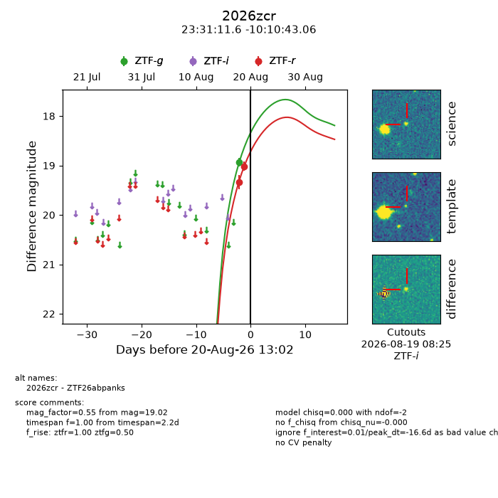
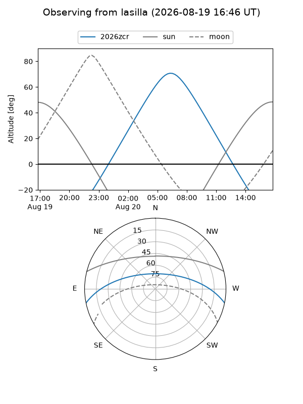
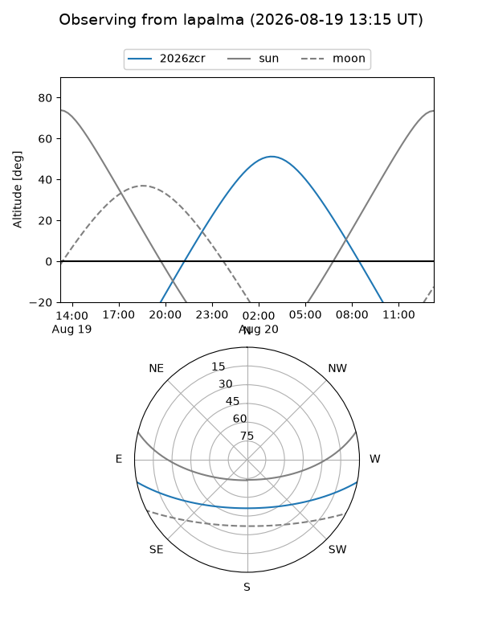
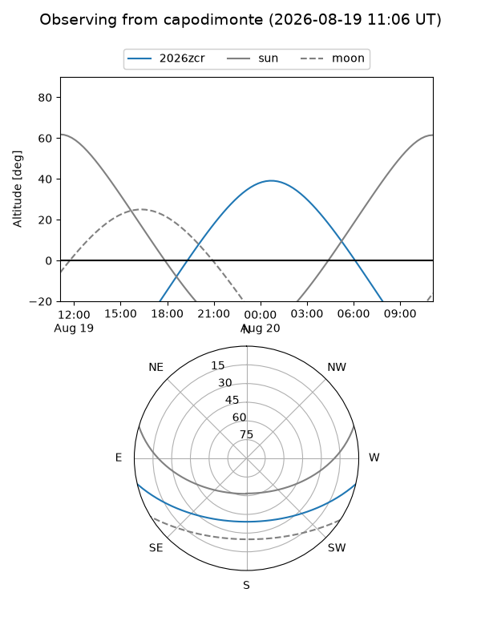
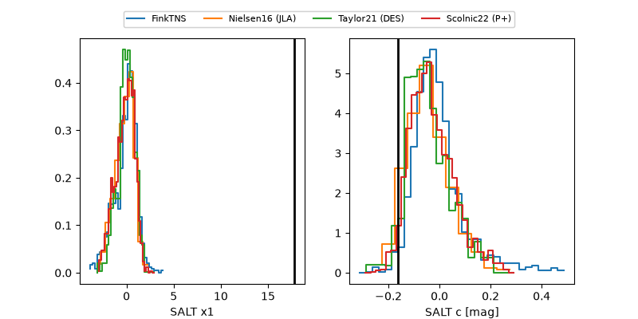

2026zcr
Target 2026zcr at 2026-08-20 13:05
Aliases and brokers:
FINK-ZTF: ztf.fink-portal.org/ZTF26abpanks
Lasair-ZTF: lasair-ztf.lsst.ac.uk/objects/ZTF26abpanks
ALeRCE-ZTF: alerce.online/object/ZTF26abpanks
YSE-PZ: ziggy.ucolick.org/yse/transient_detail/2026zcr
TNS name: wis-tns.org/object/2026zcr
Direct TNS query: direct search
alt names
ZTF26abpanks (ztf,fink_ztf)
2026zcr (tns,yse)
Coordinates:
equatorial (ra, dec) = 352.7984,-10.17863
equatorial (HMS+DMS) = 23:31:11.62,-10:10:43.06
galactic (l, b) = (70.9867,-64.61045)
Flags:
TNS type: nan
peak dt: -16.6
Photometry:
last ztfg=18.93, ztfr=19.02
1 ztfg, 2 ztfr detections
Lightcurve

Visibility



Additional plots
